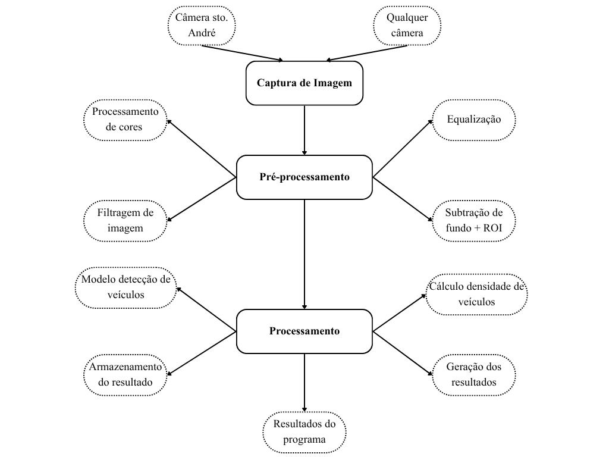

Resumo
Nesta etapa detalharemos o cenário e a aplicação do projeto, assim como seus objetivos e funcionalidades.
Projeto
Detector de Trânsito e Enchentes
1. Problema Geral
Vivemos em um contexto no qual presenciamos alto tráfego de veículos nas avenidas ao redor da Universidade Federal do ABC, causando trânsito e grande transtorno para os discentes e docentes da universidade. Além deste fato, também observamos enchentes em temporadas de grande densidade de chuva, inviabilizando a presença nas aulas. Neste cenário, o sistema proposto busca a utilização de câmeras públicas na cidade de SANTO ANDRÉ - SP para detectar em tempo real as condições de tráfego e enchentes ao redor da universidade.
2. Objetivo Geral
Fornecer para os associados da Universidade informações rápidas e precisas a respeito dos temas tratados, assim como possibilitar a melhora da segurança nos entornos da Federal do ABC.
3. Conceito Funcional do Sistema
3.1 Captura de Imagem
- Entrada: Vídeo da câmera de segurança de Santo André (ou de qualquer lugar com muito trânsito);
- Processamento: captação do frames;
- Saída: frames das câmeras de segurança;
3.2 Pré Processamento
- Entrada: Frames das câmeras de segurança;
- Pré-processamento: Processamento de cores - HSV, grayscale;
Equalização - histograma, gaussian;
Filtragem de imagem (realce);
Subtração de fundo + ROI; - Saída: Frames pré processadas;
3.3 Processamento
- Entrada: Frames pré processadas;
- Processamento: Modelo de detecção de veículos;
Cálculo de densidade de veículos;
Armazenamento do resultado (salvamento em arquivo);
Geração dos resultados baseado no frame anterior; - Saída: Resultados do programa;
4. Fluxograma
5. Tecnologias previstas
- Linguagem de Programação: C
- Bibliotecas: OpenCV
- Dispositivo de Entrada: Câmeras de segurança
- Dispositivo de Saída: Tela do computador
6. Resultado Esperado
Esperamos que com a implementação deste projeto a comunidade da Universidade Federal do ABC obtenha melhores informações e feedback a respeito das questões de trânsito e enchentes ao redor da faculdade.